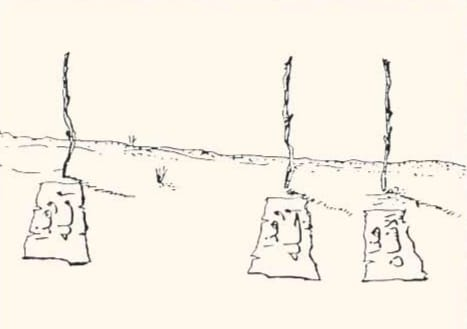

قال لقمان لابنه: يا بني بع دنياك بآخرتك تربحهما جميعا ولا تبع آخرتك بدنياك تخسرهما جميعا
(قِيلَ ادْخُلِ الْجَنَّةَ قَالَ يَا لَيْتَ قَوْمِي يَعْلَمُونَ (26) بِمَا غَفَرَ لِي رَبِّي وَجَعَلَنِي مِنَ الْمُكْرَمِينَ (27))
لقد طوى القرآن ذكر ما حصل له بعد قولته التي قالها إِنِّي آمَنتُ بِرَبِّكُمْ فَاسْمَعُونِ (25) قِيلَ ادْخُلِ الْجَنَّةَ ۖ قَالَ يَا لَيْتَ قَوْمِي يَعْلَمُونَ (26) . إلا أن بيّن أنه لم يكد يتم قوله حتى قيل له: (ادخل الجنة) ولم يذكر أمراً أو مشهداً
بين الدنيا والآخرة ومعنى ذلك أنهم لم يمهلوه بعدها البتة فإنه ما إن قال ذلك حتى وجد نفسه على باب الجنة يقال له: ادخل الجنة. فاختصر كل ما لا حاجة له به وإنما دل عليه المقام. ومن مظاهر الاختصار أنه بنى الفعل للمجهول فقال: (قيل) ولم يذكر القائل لأنه لا يتعلق غرض من ذكر القائل ولعل القائل هم الملائكة. كما أنه لم يقل: (قيل له) لأن ذلك معلوم من السياق.
قيل لعمر بن الخطاب رضي الله عنه إن فقدناك يا أمير المؤمنين _ ولا نفقدك _ نولي علينا عبد الله بن عمر فقال : بحسب آل الخطاب أن يسأل منهم عن أمة محمد رجل واحد .
"(
عن عبد الله بن مسعود – رضي الله تعالى عنه - قال: نام رسول الله - صلى الله عليه وسلم - على حصير، فقام وقد أثَّر في جَنْبه، فقلنا: يا رسول الله! لو اتخذنا لك وِطاء .. فقال: "ما لي وما للدنيا؟ ما أنا في الدنيا إلا كراكب استظل تحت شجرة ثم راح وتركها
-:ولما قرأ الحسن البصري :
﴿قل متاع الدنيا قليل﴾
قال: رحم الله عبدا صحبها على حسب ذلك، ما الدنيا كلها اولها واخرها إلا كرجل نام نومة، فرأى فى منامه بعض ما يحب، ثم انتبه
)
"

(قال شيبان (وكان راعيًا للغنم) لسفيان الثوري -رحمهما الله- " "يا سفيان عُدَّ منع الله إياك عطـاءًا منه لك ، فإنه لم يمنعك بخلًا إنما منعـك لُطفًا " )
قال سليمان بن عبد الملك لأبي حازم العالم ..
سلني أعطيك يا أبا حازم
قال: أمن أمر الدنيا أم الآخرة ؟
قال أما الآخرة فلا أملك منها شيئاً
قال وأما أنا فما سألت الدنيا من يملكها ، أفأسألها من لا يملكها .
قال تعالى: ﴿وَتَرَى الْجِبَالَ تَحْسَبُهَا جَامِدَةً وَهِيَ تَمُرُّ مَرَّ السَّحَابِ﴾[النمل:88]
فيهما قولان
الاول ان الآية تتحدث بكل وضوح عن ظاهرة عجيبة، وهي أن الناظر إلى الجبال تبدو له جامدة، أي: ساكنة، ولكنها في حقيقة الأمر ليست كذلك، بل إنها في حركة دائبة
والقول الثانى ان ذلك يكون فى الاخرة يوم القيامة
قيل لعبد الله بن جعفر رضي الله عنه إنك تعطي عطاءَ من لا يخاف العَوَز فقال :
" عودني ربي عادةً وعودتُ عباده أخرى ، فأخشى أن أقطع عادتي عن عباده فيقطع ربي عادته عني "
عن الفضيل ابن عياض أن رجلاً سأله فقال: "يا أبا علي، متى يبلغ الرجل غايته من حبِّ الله تعالى؟ فقال له الفضيل: إذا كان عطاؤه ومنعه إياك عندك سواء، فقد بلغت الغاية من حبِّه
لبس ايوب فى مرضه ثمانى عشر سنة
فجاء له الشيطان ... فقال له يا ايوب انظر الى ربك الذى وحدته وعبدته لقد قتل الله غنمك لقد احرق الله ارضك ومات اولادك
فقال له ايوب دخلتها عريانا واخرج منها عريانا
( لو هما ماسبونيش النهاردة انا هسبهم بكرة هيا الديا كده يا تسيبها يا تسيبك )
وبعد ثمانية عشر عام يرفع ايوب يده ويقول ربى انى مسنى الضر وانت ارحم الراحمين
مفيش حد ارحم بيا منك
إن في قضاء حوائج الناس لذة لا يعرفها إلا من جربها فافعل الخير مهما استصغرته فإنك لا تدري أي حسنة تدخلك الجنة ربما تكون نائماً فتَقرع أبواب السماء عشرات الدعوات لك؛من فقير أعنته أو حزين أسعدته أو عابر ابتسمت له أو مكروب نفّست عنه فلا تستهن بفعل الخير أبداً
وقال صلى الله عليه وسلم :من فرج عن مؤمن كربة من كرب الدنيا فرج الله عنه كربة من كرب يوم القيامة
فقد قال صلى الله عليه وسلم
«المسلم أخو المسلم؛ لا يَظْلمه، ولا يُسلِمه، ومَن كان في حاجة أخيه، كان الله في حاجته، ومَن فرَّج عن مسلم كُربة، فرَّج الله عنه بها كربة من كُرَب يوم القيامة، ومَن سَتر مسلمًا، ستَره الله يوم القيامة».
سمع الحسن البصريُّ رجلًا يشكو علَّة فقال :
أما إنَّك تشكو من يرحمك إلى من لا يرحمك
{ إنى جزيتهم اليوم بما صبروا }
لم يقل : بما صلّوا أو بما صاموا
أو بما تصدّقوا بل بما صبروا
لأن الصّبر عبادة تؤدِّيها وأنت تنزف وجعاً .
من المحنة يمكن ان تأتى المنحة
فتدبر العبرة مهم
تأمل سيدنا يوسف فى محنتها بعد ان رماه ملك البلاد بالسجن وتخلى عنه اخوته ولم يبقى له احد من البشر ويقول
"ذلك من فضل الله علينا"
دخل على مالك بن دينار لص فما وجد ما يأخذ ، فناداه مالك لم تجد شيئا من الدنيا ، فترغب في شيء من الآخرة ؟ قال : نعم ، قال : توضأ وصل ركعتين ، ففعل ثم جلس وخرج إلى المسجد ، فسئل من ذا ؟ قال : جاء ليسرق فسرقناه.
قال تعالى ﴿اذْهَبُوا بِقَمِيصِي هَذا فَألْقُوهُ عَلى وجْهِ أبِي يَأْتِ بَصِيرًا﴾
« لِلْمُفرِحاتِ تأْثِيرٌ عَظِيمٌ في صِحَّةِ الجِسْمِ،
وفِي (الكُنُوزِ) مِن كتب الطِّبِّ:
الفرح إن كان بلطف فإنه ينفع الجسم، ويبسط النفس، ويُريح العقل، فتقوى الأعضاء وتنتعش».
كيف لا نرضى وانت رب العالمين ... من يحتاج رضا الاخر
انحن نرضى عن الله!
حينما سئل ابن القيم: كيف أصبحت اليوم ؟
قال : لو رزق العبد الدنيا ومافيها ثم قال الحمدلله؛ لكان إلهام الله له بالحمد أعظم نعمه من إعطائه له الدنيا؛ ﻷن نعيم الدنيا يزول، وثواب الحمد يبقى .
فاللهم ما أصبح بي وامسى من نعمة أو بأحد من خلقك فمنك وحدك ﻻشريك لك فلك الحمد ولك الشكر .
وعندما سئل ابن تيمية
قال : بين نعمتين ﻻ أدري أيتهما أفضل !
ذنوب قد سترها الله فلم يستطيع أن يعايرني بها أحد من خلقه، ومودة القاها في قلوب العباد ﻻ يبلغها عملي .
وحينما سئل ابن المغيرة :
يا أبا محمد كيف أصبحت ؟
قال : أصبحنا مغرقين بالنعم عاجزين عن الشكر .
يتحبب ربنا إلينا بالنعم وهو الغني سبحانه، ونتمقت إليه بالمعاصي ونحن له محتاجون .
سأل أحدهم رجلاً صالحاً أن يدعو له بدعوةٍ طيبةٍ ، فقال له :
🍃( آنسك اللّه بقربه ) 🍃
فقال له : زدني ، فقال الرجل الصالح : من آنسه اللّه بقربه أعطاه أربعاً بغير أربع :
علماً بغير طلب ، وْغنى بغير مال ، وعزاً بغير عشيرة ، وأنساً بغير جماعة .
ألا يكفيك هذا ؟ فبكى الرجل وقال : بلى واللّه تكفي وتزيد .
( فقولا له قولاً ليّناً لعلّه يتذكر أو يخشى )
إلهي هذا رفقك بمن يقول : أنا إله ، فكيف بمن يقول : أنت الإله ؟!.
سبحانك ربي ما ارحمك
وَمِنْهُم مَّن يَقُولُ رَبَّنَا آتِنَا فِي الدُّنْيَا حَسَنَةً وَفِي الْآخِرَةِ حَسَنَةً وَقِنَا عَذَابَ النَّارِ
هذه الآية من جوامع الدعاء التي عمت الدنيا والآخرة . قيل لأنس : ادع الله لنا ، فقال : اللهم آتنا في الدنيا حسنة وفي الآخرة حسنة وقنا عذاب النار . قالوا : زدنا . قال : ما تريدون قد سألت الدنيا والآخرة ! وفي الصحيحين عن أنس قال : كان أكثر دعوة يدعو بها النبي صلى الله عليه وسلم يقول : اللهم آتنا في الدنيا حسنة وفي الآخرة حسنة وقنا عذاب النار .
" وَقَالَ مُوسَىٰ لِأَخِيهِ هَارُونَ اخْلُفْنِي فِي قَوْمِي وَأَصْلِحْ وَلَا تَتَّبِعْ سَبِيلَ الْمُفْسِدِينَ "
🔅نبي يوصي نبي !
🌷 مهما بلغنا من العلم والتدين، نحن بحاجة للتواصي والتناصح
(فَأَسَرَّهَا يُوسُفُ فِي نَفْسِهِ وَلَمْ يُبْدِهَا لَهُمْ).
هكذا النفوسٌ الكبيرة تتغافل لبقاءِ الود ..
لا تواجه أخاك بكُل مافي قلبك
اترك ما استطعت إرضاء لله
وحفاظاً على أخيك..
من المحنة يمكن ان تأتى المنحة
فتدبر العبرة مهم
تأمل سيدنا يوسف فى محنتها بعد ان رماه ملك البلاد بالسجن وتخلى عنه اخوته ولم يبقى له احد من البشر ويقول
"ذلك من فضل الله علينا"
قال الله ﷻ :-﴿وَعَلى الأَعْرَافِ رجالٌ﴾
أتدري ما الذي أوقفهم ؟!
تساوت حسناتهم مع سيئاتهم!!
لعل تسبيحة لو قالوها فرجت عنهم..
لعل صدقة يسيرة لو أخرجوها
حالت بينهم وبين هذا الانتظار..!
لاتستصغر شيئاً من المعروف .."!
لما فقد يعقوب عليه السلام، ابنه الثاني، قال :
﴿عَسَىٰ اللهُ أنْ يَأتِيَنِي بِهِمْ جَمِيعَا﴾
اشتداد الألم، لا يزيد القلوب المؤمنة إلا ثقة بتباشير الأمل
" فقلت استغفروا ربكم انه كان غفارا"
سئل أحد السلف
أي شيء يفعل الله بعبده إذا أحبه ؟
قال: يلهمه الاستغفار عند التقصير ..
أستغفر الله وأتوب إليه..
قال يوسف عليه السلام :
( ذَٰلِكُمَا مِمَّا عَلَّمَنِي رَبِّي )
المسافة بين التواضع والكبر هي نسبة الفضل لله أو منازعته فيه !
لا تَـدع مناسبة دون الإشارة إلى فضل الله ، أو تقول فيها كلمة تثني فيها على الله ، أو توحي إيحاءً يذكّـر بالله .
قال عمر بن الخطاب، رضي الله عنه: «ما كانت الدنيا همّ أحد إلا لزم قلبه ثلاث: فقر لا يدرك غناه، وهمّ لا ينقضي مداه، وأمل لا يدرك منتهاه.